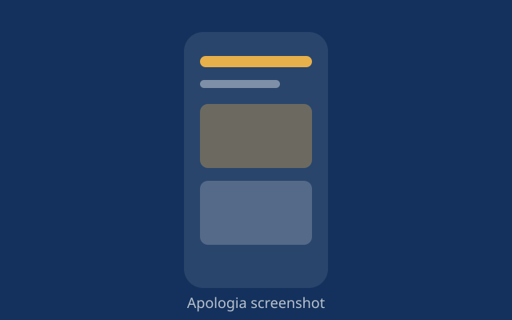
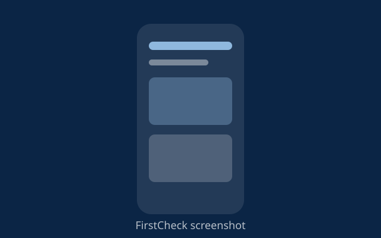
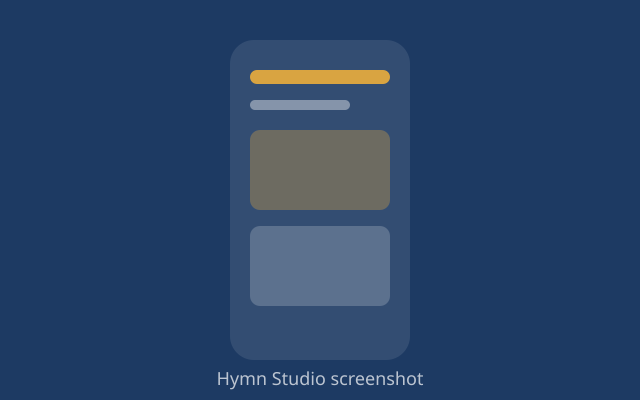

Apologia
An offline-first Bible study and theological reference app built with Flutter. It lets students read, search and cross-reference without a connection.
Flutter, Dart
View on GitHub
An offline-first Bible study and theological reference app built with Flutter. It lets students read, search and cross-reference without a connection.
Flutter, Dart
View on GitHub
An offline-first health triage app for the Nigerian market. It guides users through symptoms and suggests when to seek care, even with no data.
Flutter, offline storage
View on GitHub
An Android studio for creating hymns and songs with AI help, MIDI editing and live accompaniment, built with Kotlin and Jetpack Compose.
Kotlin, Jetpack Compose
View on GitHub